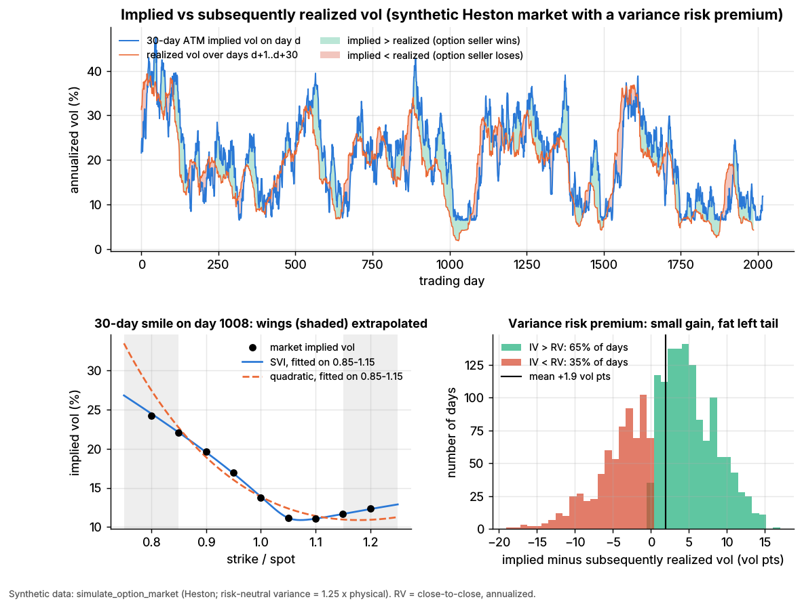

Options pricing and vol surfaces for market making¶
TL;DR
- Black–Scholes is the quoting language, not the model: prices become implied volatility, one scale for every strike and expiry.
- The model is the volatility surface: a smooth smile per expiry (SVI, spline, SABR) fitted to filtered quotes and checked for static arbitrage.
- Two speeds: refit every second to minute; reprice thousands of series on every underlying tick, under a sticky-strike or sticky-delta rule.
- In Lab 06 (synthetic), a parabola misses the wings by 1.25 vol points, SVI by 0.12.
Level: Deep dive · Pipeline stage: market making · Last verified: 2026-11
| Field | Value |
|---|---|
| Purpose (the question it answers) | What is every listed option worth now, consistently across the chain, and how does that move with spot? |
| Inputs → Outputs | option quotes, underlying fair value, rates, dividends, borrow → forward and smile per expiry; theo, vol and Greeks per series |
| Used by strategies | Options market making · Volatility risk premium and vol arb · Dispersion and correlation trading |
| Latency / compute regime | refit every 1–60 s (ms per expiry); theo updates per underlying tick (µs) |
| Key parameters | SVI (5 per expiry) or spline (9–15 nodes); vega or 1/spread weights; quote filters; refit cadence; spot-vol rule |
| Main failure modes | wrong forward; wing extrapolation; stale quotes; arbitrage; wrong smile dynamics |
| Lab | Lab 06 |
Intuition¶
$2.29 for a 30-day call is cheap or rich only relative to strike, expiry and spot. Implied vol compares across the chain, converts to risk through vega, and is how traders quote ("I'll pay 20.1").
Equity smiles slope down: since 1987, out-of-the-money index puts carry higher vols than calls (Derman 1999). Vols also vary by expiry: the term structure. A market maker needs an arbitrage-free value for every series, including strikes with no usable quote. So it fits a surface σ(k, T) in log-moneyness k = ln(K/F) and sets theo = Black–Scholes(F, K, T, σ(k, T)). Quoting skews around theo.
Where it sits in the pipeline¶
flowchart LR
opra["OPRA option quotes"] --> filt["Quote filter<br/>size, width, crossed"]
und["M2 underlying<br/>fair value"] --> fwd["Implied forward<br/>parity, dividends, borrow"]
filt --> fit["M8 smile fit per expiry<br/>plus arbitrage checks"]
fwd --> fit
fit --> theo["M8 theo engine<br/>theo and Greeks per series"]
und --> theo
theo --> quote["M4 quoting and inventory"]
theo --> hedge["M7 hedging"]
theo --> attr["L1 Greeks attribution"]
quote --> risk["M9 risk checks"]
style fit fill:#ffd54f,stroke:#333
style theo fill:#ffd54f,stroke:#333The algorithm¶
- Forward. Put-call parity near the money gives F = K + e^{rT}(C − P), absorbing dividends and borrow. American single-stock prices are first converted to European with a tree or the Barone-Adesi–Whaley approximation
[Lore]. - Filter. Out-of-the-money options only; drop crossed, stale, small or very wide quotes.
- Fit each expiry in total variance w = σ²T. SVI's wings are linear in k, as Lee's (2004) moment formula requires. Weight by vega or 1/spread.
- Check calendar (w non-decreasing in T) and butterfly (non-negative density) arbitrage.
- Move. Between refits, slide smiles with spot; reprice everything.
import numpy as np
def svi_total_variance(p, k):
"""Raw SVI (Gatheral 2004): total implied variance w = sigma^2 T at log-moneyness k."""
a, b, rho, m, s = p
return a + b * (rho * (k - m) + np.sqrt((k - m) ** 2 + s ** 2))
def fit_smile(log_moneyness, implied_vol, T, method="svi", weights=None):
"""Lab 06's fit_smile: returns k -> implied vol for one expiry.
weights (e.g. vega / bid-ask spread) are an addition; the lab fits unweighted."""
k, iv = np.asarray(log_moneyness, float), np.asarray(implied_vol, float)
ok = np.isfinite(iv) # no time value -> no vol
k, iv = k[ok], iv[ok]
wt = np.ones_like(iv) if weights is None else np.asarray(weights, float)[ok]
if method == "quadratic": # local fit: fine ATM, wrong wings
c2, c1, c0 = np.polyfit(k, iv, 2, w=np.sqrt(wt))
return lambda x: c0 + c1 * x + c2 * x ** 2
q2, q1, q0 = np.polyfit(k, iv ** 2 * T, 2) # start: parabola in total variance
b0 = max(0.2 * q2, abs(q1) / 0.9, 1e-4) # with m = 0, s = 0.1
x0 = [q0 - 0.1 * b0, b0, np.clip(q1 / b0, -0.9, 0.9), 0.0, 0.1]
bounds = ([-1.0, 0.0, -0.999, -1.0, 1e-3], [1.0, 5.0, 0.999, 1.0, 2.0]) # b >= 0, |rho| < 1
def resid(p): # fit in vol space
w = np.maximum(svi_total_variance(p, k), 1e-10)
return np.sqrt(wt) * (np.sqrt(w / T) - iv)
p = least_squares(resid, x0, bounds=bounds).x # scipy.optimize, as in the lab
return lambda x: np.sqrt(np.maximum(svi_total_variance(p, x), 1e-10) / T)
def calendar_arbitrage(w_near, w_far):
"""Same k grid, two expiries: total variance must not fall with maturity."""
return np.any(w_far < w_near - 1e-12)
def theo_vol(K, F_now, F_fit, smile, rule="sticky_strike"):
"""Vol for strike K after the forward moves from F_fit (last refit) to F_now."""
if rule == "sticky_strike": # vol pinned to the strike
return smile(np.log(K / F_fit))
return smile(np.log(K / F_now)) # sticky delta: smile slides with spot
Worked example with numbers¶
Illustrative. Spot = forward = $100, zero rates, 30 days (T = 0.0822). Smile: σ(K) = 20% − 0.40 × ln(K/F).
| Step | Calculation | Result |
|---|---|---|
| 100-strike call at 20% | Black–Scholes | $2.287; vega $11.43 per vol point per contract |
| Spot to $98, sticky strike | vol stays 20.00% | theo $1.403 |
| Spot to $98, sticky delta | 2.02% out of the money: 20 − 0.4 × 2.02 = 19.19% | theo $1.318 |
| Gap | $0.086 × 100 shares | $8.57 per contract |
That 0.8-vol-point gap exceeds a 0.5-point edge ($5.30 at the new vega). The hedge moves too: under sticky delta the strike's vol rises 0.40/S = 0.004 per $1, so delta is 0.511 + 11.43 × 0.004 = 0.557 (vega per share per unit of vol is also 11.43). On 1,000 contracts the extra hedge is 4,573 shares, about $457,000 (hedging algorithms).
Key parameters and how practitioners tune them¶
- Model. SVI or SSVI for indices
[Lore]; one vendor platform fits splines with separate put and call wing slopes[Verified]; SABR in rates. - Filters. The same guide drops strikes quoted wider than 2.5–3 times the at-the-money width and republishes at most once a second, at least once a minute
[Verified]. - Spot-vol rule. Sticky strike in range-bound markets, sticky delta in trending ones (Derman 1999)
[Verified]; Bergomi's skew stickiness ratio spans both[Reported]. - Events. Earnings variance is carved out as a one-day jump
[Lore].
Textbook version vs what firms actually do¶
- Textbook: one model prices the chain. Practice: a surface fitted slice by slice; models for exotics and sanity checks
[Lore]. SVI came from Merrill Lynch (Gatheral 2004)[Verified]; Gatheral's book (2006) is the reference. - Arbitrage-free? Not automatically: Gatheral & Jacquier (2014) give conditions for SVI surfaces; Martini & Mingone characterize butterfly-free slices
[Verified]. - Dynamics. Hagan et al. (2002) built SABR because local vol moves the smile the wrong way with spot
[Verified]. - Scale. 15.2 billion US option contracts traded in 2025
[Verified]; OPRA plans for 13.6 million messages per 100 ms by July 2026[Verified]. Traders who time fills against fair value pay effective spreads under 40% of conventional measures (Muravyev & Pearson 2020)[Verified]. - American exercise. Many holders skip optimal pre-dividend call exercise; professionals capture the value (Pool, Stoll & Whaley 2008)
[Reported].
How to tell if it's working¶
- Fitted vols inside bid-ask on liquid strikes; residuals in vega dollars; stable parameters; no arbitrage flags.
- Markouts of fills against theo (M5); small "unexplained" in Greeks attribution (L1).
Lab 06, synthetic lab result (fit on strikes 0.85–1.15 of spot, predict 0.80 and 1.20):
| Fit | In-sample RMSE | Wing error, mean abs | Wing error, max |
|---|---|---|---|
| Quadratic | 0.50 vol pts | 1.25 | 4.7 |
| Raw SVI | 0.035 | 0.12 | 0.35 |
Quotes come from the generating Heston model, without bid-ask or stale prints, so fits look far cleaner than live ones; what transfers is that a parabola is local. Implied ran 1.9 points above realized (20.3% vs 18.4%); the real VIX has averaged about 4 points above realized since 1990 [Reported].

Lab 06, synthetic: implied vs subsequently realized vol (top); SVI and a parabola extrapolated to the shaded wings (bottom left); implied minus realized (bottom right).
Failure modes and pitfalls¶
- Wrong forward: a stale dividend or borrow squeeze looks like skew.
- Wings: parabolas bend the wrong way.
- Garbage quotes at the open and in fast markets.
- Wrong dynamics: leaves hidden vanna.
- 0DTE and events: 0DTE was a record 66.2% of SPX volume in July 2026
[Verified].
How practitioners talk about it¶
- "Puts are a vol over the fit." → market vol 1 point above the surface.
- "We're sticky strike; it's chopping." → strike vols unchanged as spot moves.
- "Parity forward's 20 cents under our div model." → market implies more dividend or costlier borrow.
- "Take earnings out first." → strip event variance.
- "Theo ticks with the future." → two-speed loop.
Questions you could ask a quant about this¶
- Do you fit in vol or price, and how do you weight strikes?
- Dividend-model forward or parity forward?
- How often do you refit, and what moves theos in between?
- Which spot-vol rule do your deltas assume, and how do you test it?
- 🔒 What is your wing model?
Go deeper¶
Math: SVI, static arbitrage, smile-adjusted delta
Raw SVI with wing slopes \(b(1 \pm \rho)\), bounded by Lee: \(\limsup_{|k|\to\infty} w/|k| \le 2\).
No butterfly arbitrage iff (Durrleman)
no calendar arbitrage iff \(\partial_T w \ge 0\). Smile-adjusted delta, vega \(\mathcal{V}\):
zero under sticky strike; \(-f'(k)/S\) times vega under sticky moneyness \(\sigma = f(\ln(K/S))\). Between refits, \(\text{theo} + \Delta\,dS + \tfrac12\Gamma\,dS^2\) costs a few multiply-adds per series.
Related pages¶
- Options market making
- Hedging algorithms
- Fair value and microprice
- ETF, futures and options linkages
- Walkthrough: an options market maker
Sources¶
- [Verified] Gatheral, J. (2004-05-26). "A parsimonious arbitrage-free implied volatility parameterization with application to the valuation of volatility derivatives." Presentation, Global Derivatives & Risk Management, Madrid. https://jgatheral.github.io/assets/slides/madrid2004.pdf (accessed 2026-11)
- [Verified] Gatheral, J. (2006). The Volatility Surface: A Practitioner's Guide. Wiley. https://doi.org/10.1002/9781119202073 (accessed 2026-11)
- [Verified] Gatheral, J. & Jacquier, A. (2014). "Arbitrage-free SVI volatility surfaces." Quantitative Finance 14(1), 59–71. https://doi.org/10.1080/14697688.2013.819986 (accessed 2026-11)
- [Verified] Martini, C. & Mingone, A. (2020). "No arbitrage SVI." arXiv:2005.03340. https://arxiv.org/abs/2005.03340 (accessed 2026-11)
- [Verified] Lee, R. W. (2004). "The moment formula for implied volatility at extreme strikes." Mathematical Finance 14(3), 469–480. https://doi.org/10.1111/j.0960-1627.2004.00200.x (accessed 2026-11)
- [Verified] Hagan, P. S., Kumar, D., Lesniewski, A. S. & Woodward, D. E. (2002). "Managing smile risk." Wilmott Magazine, 84–108. https://wilmott.com/?p=3482 (accessed 2026-11)
- [Verified] Derman, E. (1999). "Regimes of volatility." Risk, April 1999 (also Goldman Sachs Quantitative Strategies Research Notes, January 1999). https://emanuelderman.com/regimes-of-volatility/ (accessed 2026-11)
- [Reported] Bergomi, L. (2016). Stochastic Volatility Modeling. Chapman & Hall/CRC (skew stickiness ratio). https://doi.org/10.1201/b19649 (accessed 2026-11)
- [Verified] Muravyev, D. & Pearson, N. D. (2020). "Options trading costs are lower than you think." Review of Financial Studies 33(11), 4973–5014. https://doi.org/10.1093/rfs/hhaa010 (accessed 2026-11)
- [Verified] Pool, V. K., Stoll, H. R. & Whaley, R. E. (2008). "Failure to exercise call options: An anomaly and a trading game." Journal of Financial Markets 11(1), 1–35. https://doi.org/10.1016/j.finmar.2007.09.001 (accessed 2026-11)
- [Verified] Barone-Adesi, G. & Whaley, R. E. (1987). "Efficient analytic approximation of American option values." Journal of Finance 42(2), 301–320. https://doi.org/10.1111/j.1540-6261.1987.tb02569.x (accessed 2026-11)
- [Verified] nth Moment LLC / Vela (now Exegy) (2020-10-12). "Dynamic Skew App User Guide," v4.48 (vendor documentation for the Metro options platform). https://www.exegy.com/wp-content/uploads/2021/11/DynamicSkewApp_UserGuide.pdf (accessed 2026-11)
- [Verified] SIAC for the OPRA Participants (2025-09-15). "Revised OPRA Capacity Projections." https://cdn.opraplan.com/documents/notices/OPRA_Capacity_Projections_Update_0925.pdf (accessed 2026-11)
- [Verified] Cboe, Schwartz, H. (2026-01-22). "The State of the Options Industry: 2025." https://www.cboe.com/insights/posts/the-state-of-the-options-industry-2025 (accessed 2026-11)
- [Verified] Cboe (2026-08). "Market Metrics That Matter: Derivatives July 2026 Volume Highlights." https://www.cboe.com/insights/posts/market-metrics-that-matter-derivatives-july-2026-volume-highlights (accessed 2026-11)
- [Reported] CFA Institute Enterprising Investor (2024-07-31). "How well does the market predict volatility?" https://blogs.cfainstitute.org/blog/2024/07/31/how-well-does-the-market-predict-volatility (accessed 2026-11)